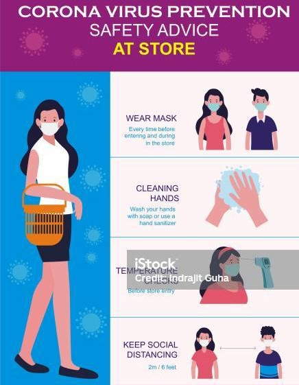

Visit our physical stores to experience the world of fine leather products. We have multiple locations where you can explore our collections, get personalized fittings, and more.
In our stores, you can explore a wide range of leather products, including:
Our stores offer unique features to enhance your shopping experience, such as:
We look forward to welcoming you to our stores. Plan your visit and explore our exceptional leather products in person.
We have our very own online where you get to see different products made out of leather. The Inkwali Yenkosi online shop can be found on one of our pages Shop Now. You shop and buy any leather products which are high quality and you can get at an affordable price ranges. We also offer delivery services to get your packages to the comfort of your home.
Your health and safety are our top priorities. We have implemented rigorous safety measures in our stores, including:
